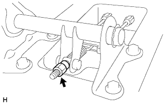
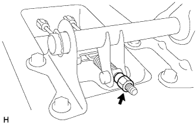

ТРОС ПРИВОДА СТОЯНОЧНОГО ТОРМОЗА > УСТАНОВКА |
| 1. УСТАНОВИТЕ ТРОС ПРИВОДА СТОЯНОЧНОГО ТОРМОЗА № 3 В СБОРЕ |
Для 3-дверных моделей:
Закрепите зажим троса привода стояночного тормоза № 4 болтом.
Присоедините зажим троса привода стояночного тормоза № 2 к тросу привода стояночного тормоза № 3.
Закрепите трос привода стояночного тормоза № 3 2 болтами и 3 гайками.
Для 5-дверных моделей:
Установите зажим троса привода стояночного тормоза № 3 на трос привода стояночного тормоза № 3.
Закрепите трос привода стояночного тормоза № 3 4 болтами.
Установите теплозащитный экран троса привода стояночного тормоза № 1.
Присоедините захваты троса привода стояночного тормоза № 3.
Подсоедините трос привода стояночного тормоза № 3 к тяге привода стояночного тормоза № 1.
Установите трос привода стояночного тормоза № 3 на опорный диск и закрепите его 2 болтами.
| 2. УСТАНОВИТЕ ТРОС ПРИВОДА СТОЯНОЧНОГО ТОРМОЗА № 2 В СБОРЕ |
Для 3-дверных моделей:
Закрепите зажим троса привода стояночного тормоза № 3 болтом.
Установите зажим троса привода стояночного тормоза № 1 на трос привода стояночного тормоза № 2.
Закрепите трос привода стояночного тормоза № 2 2 болтами и 3 гайками.
Для 5-дверных моделей:
Присоедините зажим троса привода стояночного тормоза № 2 к тросу привода стояночного тормоза № 2.
Закрепите трос привода стояночного тормоза № 2 5 болтами.
Присоедините захваты троса привода стояночного тормоза № 2.
Подсоедините трос привода стояночного тормоза № 2 к тяге привода стояночного тормоза № 1.
Установите трос привода стояночного тормоза № 2 на опорный диск и закрепите его 2 болтами.
| 3. ПОДСОЕДИНИТЕ КОЛОДКУ СТОЯНОЧНОГО ТОРМОЗА № 2 В СБОРЕ С РЫЧАГОМ ПРИВОДА КОЛОДОК СТОЯНОЧНОГО ТОРМОЗА |
| 4. УСТАНОВИТЕ ТОПЛИВНЫЙ БАК В СБОРЕ |
Для моделей с 1GR-FE:
Установите топливный бак в сборе (Нажмите здесь).
Для 3-дверных моделей с 1KD-FTV:
Установите топливный бак в сборе (Нажмите здесь).
Для 5-дверных моделей с 1KD-FTV:
Установите топливный бак в сборе (Нажмите здесь).
Для 3-дверных моделей с 2TR-FE:
Установите топливный бак в сборе (Нажмите здесь).
Для 5-дверных моделей с 2TR-FE:
Установите топливный бак в сборе (Нажмите здесь).
Для моделей с 5L-E:
Установите топливный бак в сборе (Нажмите здесь).
| 5. УСТАНОВИТЕ ЦЕНТРАЛЬНУЮ ВЫПУСКНУЮ ТРУБУ В СБОРЕ (для 3-дверных моделей) |
Для моделей с 1KD-FTV:
Установите центральную выпускную трубу (Нажмите здесь).
Для моделей с 2TR-FE:
Установите центральную выпускную трубу (Нажмите здесь).
| 6. ПРОВЕРЬТЕ ХОД РЫЧАГА СТОЯНОЧНОГО ТОРМОЗА |
Полностью поднимите рычаг стояночного тормоза, чтобы включить стояночный тормоз.
Опустите рычаг, чтобы отпустить стояночный тормоз.
Медленно до упора затяните рычаг стояночного тормоза и подсчитайте число щелчков.
| 7. ОТРЕГУЛИРУЙТЕ ХОД РЫЧАГА СТОЯНОЧНОГО ТОРМОЗА |
Для моделей с автоматической трансмиссией:
Снимите вещевой ящик в облицовке туннеля пола в сборе (Нажмите здесь).
Для моделей с механической трансмиссией:
Снимите вещевой ящик в облицовке туннеля пола в сборе (Нажмите здесь).
Для моделей с холодильной камерой:
Снимите вещевой ящик в облицовке туннеля пола в сборе (Нажмите здесь).
Полностью отпустите рычаг стояночного тормоза.
|  |
Ослабьте регулировочную гайку, чтобы полностью отпустить трос привода стояночного тормоза.
Временно установите гайки ступицы.
 |
Поверните регулятор и разводите колодки до тех пор, пока диск не будет зафиксирован.
 | Регулятор сводит колодки |
 | Регулятор разводит колодки |
Поверните регулятор и сведите колодки таким образом, чтобы диск мог вращаться плавно.
Проверьте, не вызывает ли колодка прихвата тормозов.
Вставьте затычку отверстия.
Отверните гайки ступицы.
|  |
Поверните регулировочную гайку до тех пор, пока не будет обеспечен надлежащий ход рычага стояночного тормоза.
Затяните рычаг рычаг стояночного тормоза 3-4 раза и проверьте ход рычага стояночного тормоза .
Проверьте, не прихватывает ли тормоза.
Убедитесь, что при поднятии рычага стояночного тормоза включается контрольная лампа состояния тормозной системы.
Для моделей с автоматической трансмиссией:
Установите вещевой ящик в облицовке туннеля пола в сборе (Нажмите здесь).
Для моделей с механической трансмиссией:
Установите вещевой ящик в облицовке туннеля пола в сборе (Нажмите здесь).
Для моделей с холодильной камерой:
Установите вещевой ящик в облицовке туннеля пола в сборе (Нажмите здесь).
| 8. УСТАНОВИТЕ ЗАДНИЙ ВЕЩЕВОЙ ЯЩИК В ОБЛИЦОВКЕ ТУННЕЛЯ ПОЛА В СБОРЕ |
Для моделей с автоматической трансмиссией:
Установите вещевой ящик в облицовке туннеля пола в сборе (Нажмите здесь).
Для моделей с механической трансмиссией:
Установите вещевой ящик в облицовке туннеля пола в сборе (Нажмите здесь).
Для моделей с холодильной камерой:
Установите вещевой ящик в облицовке туннеля пола в сборе (Нажмите здесь).
| 9. УСТАНОВИТЕ ЗАДНЕЕ КОЛЕСО |